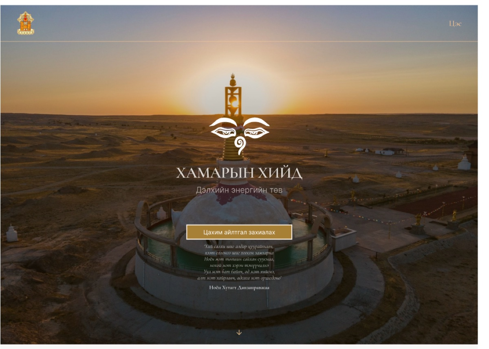
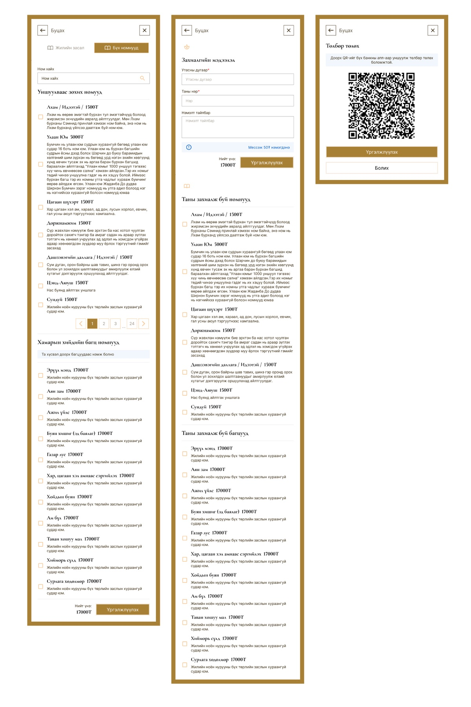
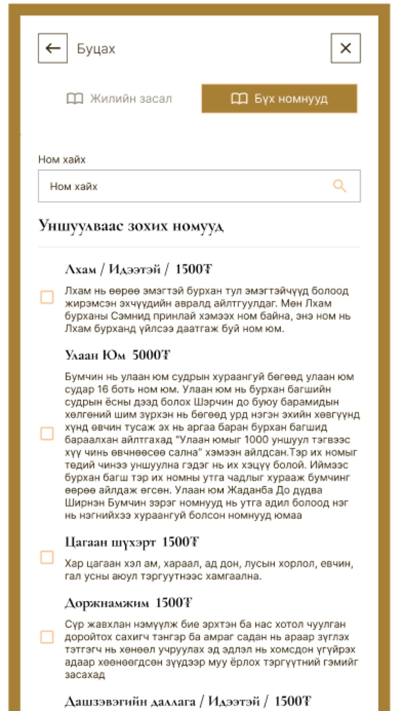
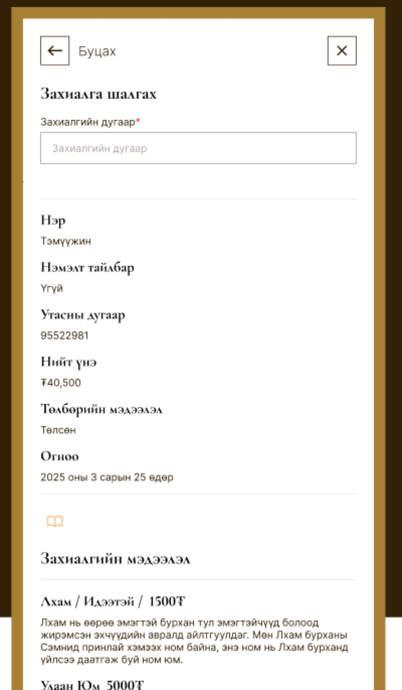
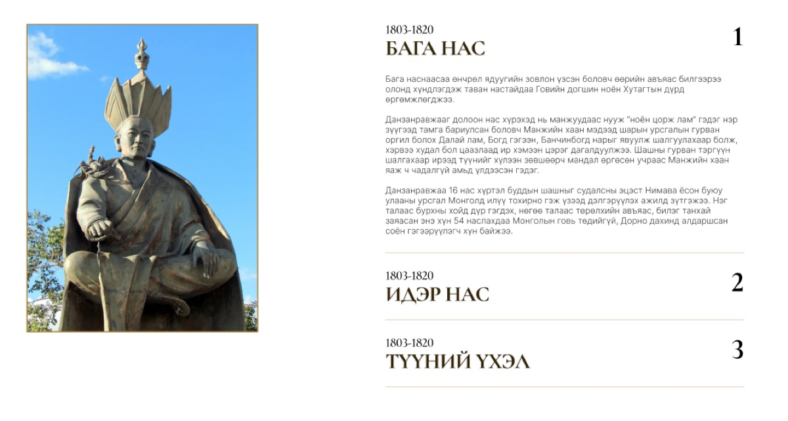
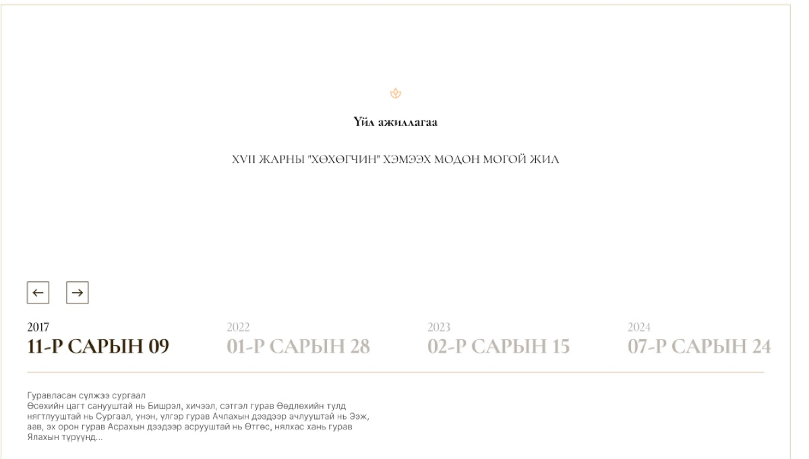
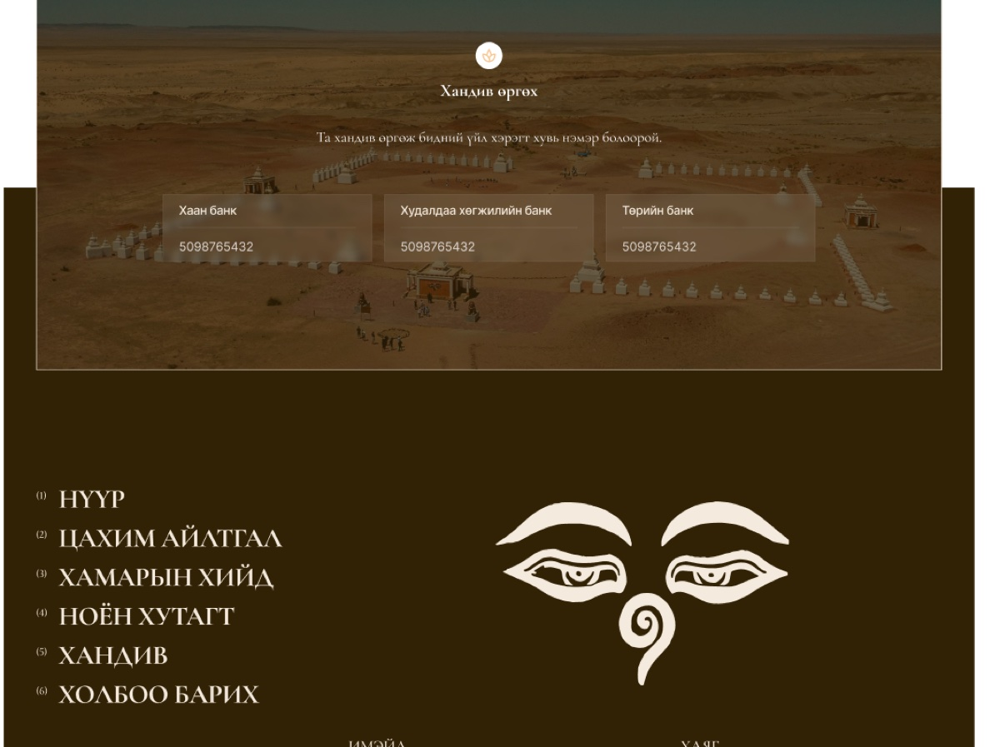
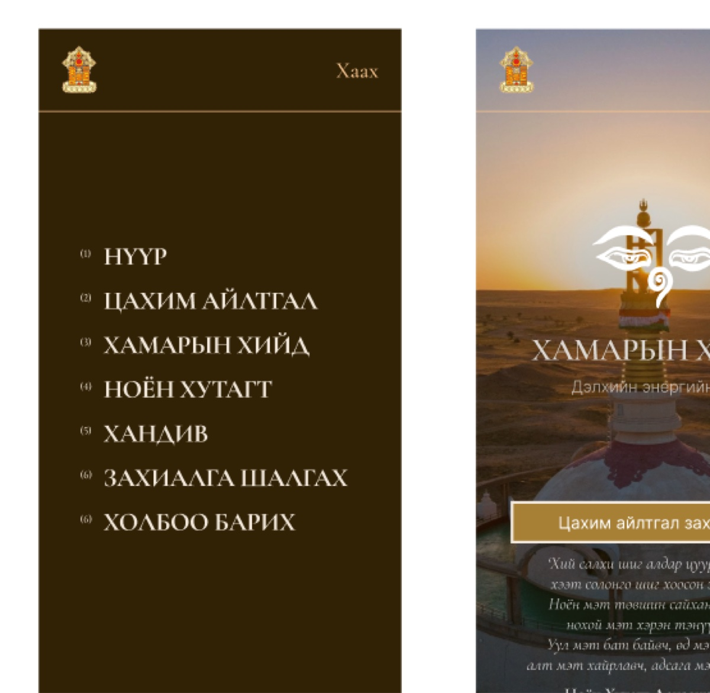

Khamriin Khiid web design
2025
A Buddhist monastery in the Gobi, selling sutra readings online. You choose from a catalogue, pay by scanning a QR code with your bank app, and a monk reads them on your behalf six hundred kilometres away. You will never see it happen. That was the design problem I was handed.
A monastery in the Gobi
Khamriin Khiid stands in Dornogovi province, 38 kilometres south of Sainshand, open 8:00 to 17:30 every day of the year.1 It calls itself Дэлхийн энергийн төв, the world’s energy centre, and the ring of white stupas out on the red gravel is what people drive into the desert to see.

I opened the page on that at sunset, with the monastery’s eyes over it and a verse by its founder set in italics underneath. I kept the masthead to two things: the emblem, and the word Цэс. Menu. Nothing else.
Under the title I put one button, Цахим айлтгал захиалах. Order an online petition. That is the product, and I put it above the fold on a page about a nineteenth-century monastery because that is what the site is really for.
Selling something nobody can watch
I built ordering as three panels.

The first is a catalogue: twenty-four pages of sutras, each with a name, a price and a paragraph saying what it is for. Цагаан шүхэрт, 1500₮, against slander, curses, illness, fire and water. Цэнд-Аюуш, 1500₮, for long life. Улаан Юм, 5000₮, sixteen volumes, with a note on why the Buddha taught it. Below them I grouped eleven packages at 17,000₮ by the part of a life they cover: health, travel, work, prosperity, family, livestock, schooling, the next life.

The second panel takes a phone number, a name and an optional note, then repeats the order back in full. I also wrote in that an SMS confirmation adds 50₮, because I wanted the person paying to see every cost before they reached the QR code. The third panel shows that code, to scan with any bank app.
None of that is unusual as e-commerce. What is unusual is the thing being bought. It cannot be inspected before, delivered after, or returned. A monk will read a text at a monastery in the Gobi, and the customer will not be in the room. That was the part I kept coming back to.
Most checkouts end in a tracking number because the buyer wants to know where the parcel is. This one ends in a record because the buyer needs to believe it happened at all.
The receipt is the product

So I built a page for checking an order. Type the number and it returns the name, the phone number, the total, the word Төлсөн, paid, the date, and the full list of what was commissioned, each sutra still carrying the paragraph that explains it.
I treated that screen as the real deliverable, because it does the job a delivery van does everywhere else. I made each line carry its description again rather than a bare title, because six weeks on nobody remembers which of the seven sutras was the one for travelling.
Nine chapters of a life
One of the site’s four sections is a biography, and it was the part most likely to end up as a wall of text.
Danzanravjaa was a lama, a poet, a playwright and a teacher who built a theatre and a school in the Gobi. The monastery’s own account says he was honoured at five, that the Manchu emperor sent three senior figures to test him at seven, and that he died at fifty-four.2

I built it as nine numbered chapters. Бага нас, childhood. Идэр нас, his prime. Түүний үхэл, his death. Then his doctrine, his teaching, what he built, his philosophy, and a chapter on drink. One opens at a time, and I made the portrait beside it change with the chapter, so the statue gives way to the painting of him at his writing desk.
Numbering a life is a small move and it did a lot for me here. It turns a biography into something a reader can enter in the middle, which is how people actually read about a saint they have just heard of.
Two calendars at once

The events module carries a line I could have quietly dropped and chose to keep: XVII жарны “хөхөгчин” хэмээх модон могой жил. It comes apart like this.
- XVII жарны
- of the seventeenth sixty-year cycle, which began in 1987
- хөхөгчин
- blue, in its female polarity
- хэмээх
- called, or by the name of
- модон
- wood, the element
- могой
- snake, the animal
- жил
- year
Beneath it I ran a strip of ordinary Gregorian dates you can arrow through, and beneath those, the teaching for the day and a marker naming which auspicious days it falls on.
A monastery’s year does not run on months. It runs on a sixty-year cycle, an element, a colour that carries a gender, and an animal, and on days that are favourable for particular things. A date picker that only offered 2025 would have named the wrong year, so I put both systems on screen at once and let neither be a translation of the other.
Brown, cream, three bank accounts
I kept it to four colours.
The brown is the monastery’s own, the colour of the temple interiors and the robes. I let brass do the work a brand colour usually does, and spent it on the one button, the hairlines and the numerals. Cream is type on brown. Everything else is an off-white page.
I washed the photographs back under a warm veil so they sit behind the type instead of shouting past it, and where a section had no photograph I drew pale line illustrations instead: hills behind the founding story, a camel caravan behind the quotation.

For donations I set three bank accounts. Khan Bank, Trade and Development Bank, State Bank, numbers printed, no card form and no gateway taking a percentage of a gift to a monastery. In Mongolia you copy the number into your banking app, which is the same app that scanned the QR code two screens earlier.

I drew all of it for the phone as well, and on this project that was not a courtesy. The people buying a sutra reading are going to scan that QR code with a bank app, on the device they are reading the page on.
- Address, hours and contact details are the monastery’s own, taken from the site footer: Urgun sum, Dornogovi province, 38 km south of Sainshand.
- The biography on the site is the monastery’s text, not mine. The account of the emperor’s test and the age at death are theirs; my work was deciding it should arrive as nine chapters rather than one.